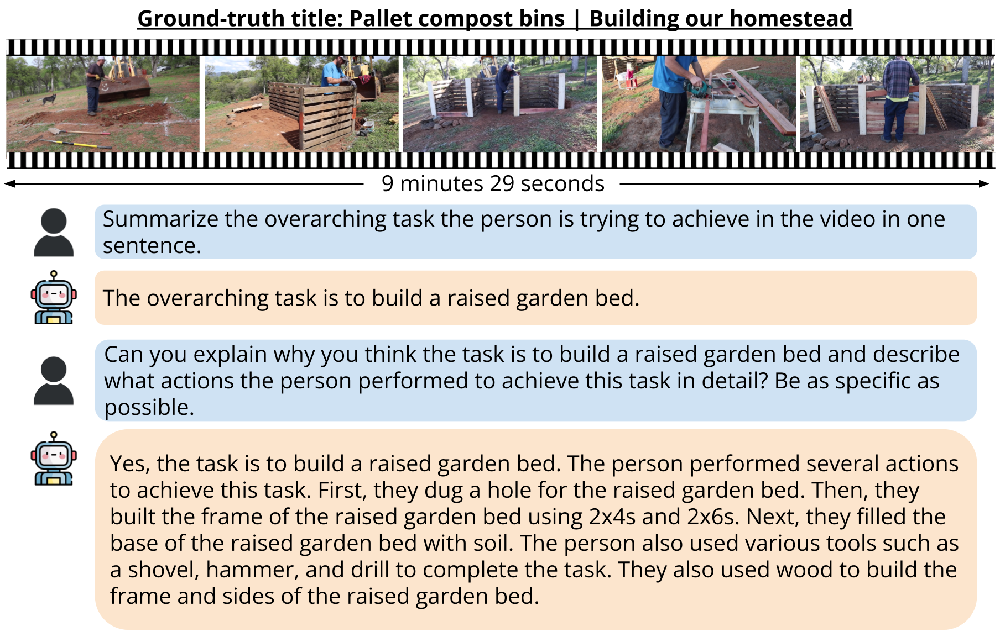

Sample summarization
Koala can be used to summarize long videos concisely.

Long video question answering is a challenging task that involves recognizing short-term activities and reasoning about their fine-grained relationships. State-of-the-art video Large Language Models (vLLMs) hold promise as a viable solution due to their demonstrated emergent capabilities on new tasks. However, despite being trained on millions of short seconds-long videos, vLLMs are unable to understand minutes-long videos and accurately answer questions about them. To address this limitation, we propose a lightweight and self-supervised approach, Key frame-conditioned long video-LLM (Koala), that introduces learnable spatiotemporal queries to adapt pretrained vLLMs for generalizing to longer videos. Our approach introduces two new tokenizers that condition on visual tokens computed from sparse video key frames for understanding short and long video moments. We train our proposed approach on HowTo100M and demonstrate its effectiveness on zero-shot long video understanding benchmarks, where it outperforms state-of-the-art large models by 3 - 6% in absolute accuracy across all tasks. Surprisingly, we also empirically show that our approach not only helps a pretrained vLLM to understand long videos but also improves its accuracy on short-term action recognition.
We propose Koala,a novel and self-supervised approach that introduces spatiotemporal queries to adapt the frozen video tokenizer in pretrained vLLMs to aggregate spatiotemporal context over longer temporal horizons, in a top-down manner. Our main hypothesis is that the video tokenizer function in vLLMs, having learned to aggregate spatiotemporal context for a fixed number of frames, can generalize to understanding the global context of longer videos using the same number of input frames. More specifically, we first encode the global context of a long video by extracting the same number of input frames at a very coarse sampling rate, referred to as key frames. To mitigate the loss of fine-grained spatiotemporal information, we then extract a sequence of video segments at a higher rate to complement the global context with local spatiotemporal information.
Koala can be used to summarize long videos concisely.
Besides summarizing, Koala can also describe the temporal order of actions seen in a video.
Here are some relevant work that are used as baselines in our experiments.
@InProceedings{TanKoala2024,
author = {Reuben Tan and Ximeng Sun and Ping Hu and Jui-Hsien Wang and Hanieh Deilamsalehy and Bryan A. Plummer and Bryan Russell and Kate Saenko},
title = {Koala: Key frame-conditioned long video-LLM},
journal = {CVPR},
year = {2024},
}